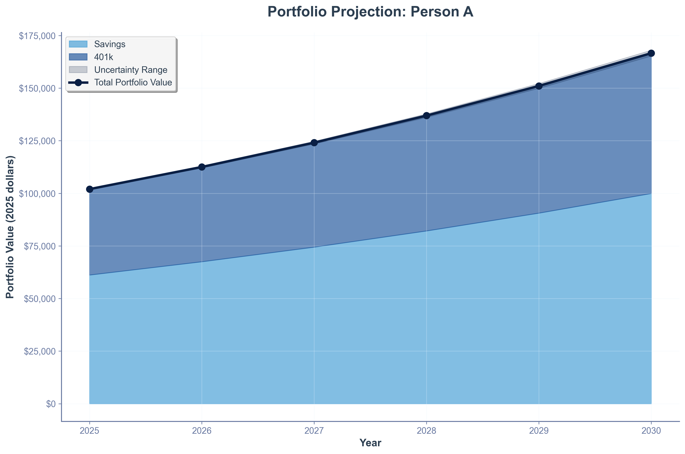

Economy & Policy
Macroeconomic Landscape
The global economy in early 2026 faces a mix of persistent inflation, shifting central bank policy, and an equity market heavily concentrated in AI-adjacent technology stocks. The Federal Reserve has been navigating a difficult path between supporting growth and containing inflation that remains above its 2% target. The U.S. labor market shows signs of cooling, with hiring slowing across several sectors even as unemployment remains historically low.
Housing affordability continues to be a major challenge, with mortgage rates staying elevated and home prices outpacing wage growth in most metropolitan areas. Consumer sentiment has softened as the cumulative effects of years of above-trend inflation erode purchasing power, particularly for middle and lower-income households. The S&P 500 has rallied on AI enthusiasm, but market breadth is narrow, raising questions about sustainability.

Major index and asset performance over recent years
Geopolitical & Market Risks
Several converging risks threaten global financial stability. Oil prices have spiked due to ongoing supply disruptions and geopolitical tensions, adding inflationary pressure at a time when central banks are trying to ease. Energy costs ripple through the entire economy, from transportation to food prices, and disproportionately affect lower-income consumers.
The Japanese yen carry trade, in which investors borrow cheaply in yen to invest in higher-yielding assets elsewhere, faces a potential unwind as the Bank of Japan gradually normalizes rates. A rapid unwind could trigger forced selling across global equity and credit markets, similar to the volatility episode in mid-2024. Currency stress in emerging markets adds to the fragility.
Trade policy remains a wildcard: reciprocal tariffs raising import duties to 25-36% are already increasing costs for businesses and consumers, while retaliatory measures from trading partners threaten export-dependent industries. Supply chain diversification is underway but far from complete.
Policy & Regulation
Policy actions continue to reshape the economic landscape. The AI Action Plan outlines more than 90 federal policy actions to accelerate innovation, build infrastructure, and sustain global AI leadership. The OBBBA housing & AI bill expands housing tax credits and mandates domestic AI supply chains. These industrial policies aim to position the U.S. competitively but carry fiscal costs.
Fiscal policy is under scrutiny as the national debt grows and interest payments consume a larger share of the federal budget. The Federal Reserve's rate path remains data-dependent, with markets pricing in gradual cuts but the timeline uncertain.
On the digital asset front, Congress passed the GENIUS Act requiring 100% reserves for stablecoins, and debated the CLARITY Act to provide regulatory frameworks for digital assets. The U.S. established a Strategic Bitcoin Reserve from seized assets, signaling institutional acceptance of digital assets as a legitimate asset class. International frameworks like the EU AI Act and MiCA regulation set parallel precedents.
Financial System Evolution
Beyond the headlines, a structural shift is underway in how financial infrastructure operates. Blockchain-based networks are increasingly serving as the plumbing of the financial system, handling settlement, payments, and asset representation in ways traditional systems cannot.
Cross-border payments and settlement: XRP (Ripple) is being adopted by financial institutions to settle cross-border payments in seconds rather than days. Ripple has partnered with over 300 financial institutions and launched RLUSD, a regulated stablecoin designed for institutional use. Stellar (XLM) serves a similar role focused on low-cost remittances and financial inclusion in developing economies.
Real-world asset tokenization: Ondo Finance (ONDO) is bridging traditional finance and decentralized finance by tokenizing real-world assets such as U.S. Treasuries and money market funds, making them accessible on-chain. This trend, broadly called "RWA tokenization," is projected to become a multi-trillion dollar market as it unlocks liquidity and fractional ownership for assets that were previously illiquid or inaccessible.
Data and interoperability: Chainlink (LINK) operates the leading decentralized oracle network, connecting smart contracts to real-world data feeds, bank APIs, and corporate systems. This infrastructure is essential for any blockchain application that needs to interact with the traditional financial system. Hedera (HBAR) provides enterprise-grade distributed ledger technology used by organizations including Google, IBM, and Boeing for supply chain verification and tokenized assets.
Stablecoins and CBDCs: Dollar-pegged stablecoins have become critical infrastructure for global payments, with combined market capitalization exceeding $200 billion. Central bank digital currencies (CBDCs) are in various stages of development worldwide, though the U.S. Anti-CBDC Act seeks to prevent a federal digital dollar. The interplay between private stablecoins and potential government digital currencies will shape the next era of monetary policy.
This is not about speculative trading. These protocols are becoming the rails on which the next generation of financial services will operate, from instant cross-border settlement to tokenized securities markets.
Strategic Recommendations
The current environment demands careful attention to several interacting forces: persistent inflation, geopolitical fragility, narrow equity market leadership, and a financial system in structural transition.
Diversification across asset classes remains critical. Equity exposure concentrated in a handful of AI mega-caps carries meaningful risk if earnings disappoint or valuations compress. Defensive sectors, real assets, and high-yield savings can help preserve purchasing power in an inflationary environment. Understanding the emerging digital financial infrastructure, while not a call to speculate, helps inform where the economy is heading and which skills and sectors will be relevant.
Oil price sensitivity, carry-trade dynamics, and tariff impacts are risks that most individual investors underestimate. Building awareness of these macro forces, even without trading on them, is valuable for career planning, housing decisions, and long-term financial preparation.
These recommendations are not financial advice but provide a framework for discussion. Reassess regularly as technology, policy, and markets evolve.
Portfolio & Simulations
Investors face a complex landscape. Combining equities, high-yield cash, real estate, AI/tech, and select digital assets can help diversify risk and capture growth. Real wealth trajectories vary depending on asset mix, risk tolerance, and discipline.
The dropdown above provides access to historical data for all 65+ assets tracked in our portfolio analysis. This raw data serves as evidence for the investment strategies and economic modeling discussed throughout this section.
Portfolio Projections: Persons A, B & C
The Economic Trends analysis illustrates how different asset mixes lead to varying long-term wealth outcomes. Three hypothetical investors are compared:
- Person A allocates most of their funds to savings and a 401(k) plan. This conservative strategy offers low volatility and steady growth but limited upside.
- Person B diversifies across technology stocks, real estate, and savings/401(k). Their portfolio enjoys higher growth potential from tech and property exposure with moderate risk.
- Person C embraces risk, combining utility-focused digital assets (XRP, LINK), tech equities, gold, and a broad market index. While this mix can deliver the highest returns, it also exhibits greater variability and drawdowns.
Simulations show that by 2030, Person C's diversified growth portfolio could deliver the largest real wealth but with significant volatility. Person B achieves balanced growth, while Person A preserves capital but may lag inflation. These scenarios highlight how asset allocation decisions drive outcomes and underscore the benefits of diversification.
Portfolio Analysis Tabs

Person A's portfolio composed of savings and 401(k) contributions shows modest growth with narrow uncertainty bands. Source: Economic Trends deck.For detailed sources and research citations, see our References page